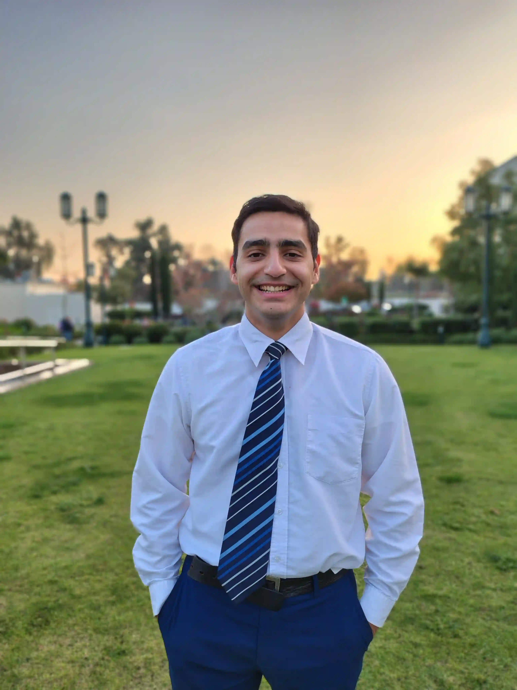

Franco Maximiliano Chumba Perez | WDD 130
Thank you for stoping by at my website, my name is Franco, I'm 23 years old and I live in Chile. I am a disciple of Christ, and I love His Gospel. I also love to watch movies, listen to music and playing videogames. I think my Favourite TV series is one called "The Bear", one of my favourite games is Dark Souls, and one of my favourite songs is Lost! - Coldplay. That is a little bit about me, I hope you like my profile website.